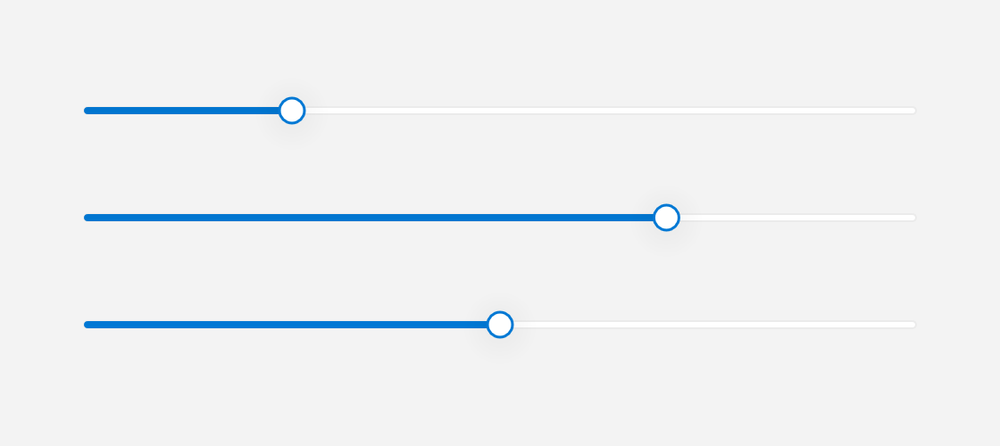

Slider
A Slider lets you pick a floating-point value by dragging a thumb along a horizontal track.

Several values, plus a disabled slider.
What it's for
A slider lets the user choose a number from a continuous range. The value is the current number. The range is the lowest and highest number the slider allows, written as min and max. By default the range is 0..1.
The widget shows a horizontal track with a thumb on it. Dragging the thumb updates the value continuously, and clicking elsewhere on the track jumps straight to that position. The value is always kept inside the range.
Use a slider for values where the exact number matters less than the general position, such as volume, brightness, or a percentage. You can also show the current value as formatted text above the thumb.
A first example
#include <cstdio>
#include <fluffy/fluffy.hpp>
int main() {
fluffy::Window win = fluffy::Window::open("Slider", 640, 400);
if (!win) return 1;
auto& sl = win.add<fluffy::Slider>(
fluffy::Rect{40, 40, 300, 32}, 0.5f);
sl.setRange(0.0f, 100.0f);
sl.setValue(42.0f);
float v = sl.value();
float lo = sl.minValue();
float hi = sl.maxValue();
std::printf("value %.1f in [%.1f, %.1f]\n", v, lo, hi);
win.run();
}
Window::open creates the window, and if (!win) stops early if it could not be opened. win.add<fluffy::Slider>() creates the slider inside the window and returns a reference to it. The auto& matters: sl is that reference, so you work with the real slider rather than a copy.
The first constructor argument is a Rect that sets the position and size. The second is the initial value, 0.5f. setRange(0.0f, 100.0f) changes the allowed range, and setValue(42.0f) moves the thumb to 42. value() reads the current number, while minValue() and maxValue() read the ends of the range.
Common tasks
Show the current value
sl.setShowValue(true);
sl.setValueFormat("{:.1f} units");
std::string fmt = sl.valueFormat();
setShowValue(true) turns on the value text above the thumb. It is off by default.
setValueFormat() takes a format pattern. In "{:.1f}", 1 means one digit after the decimal point, so 42 displays as 42.0. You can put text around the number, as in "{:.1f} units". The default pattern is "{:.2f}". valueFormat() returns the current pattern.
Change the range
sl.setRange(0.0f, 100.0f);
setRange(min, max) sets both ends of the range. If the current value falls outside the new range, it is clamped to the nearest end. Keep the lower number first.
Disable the slider
sl.setEnabled(false);
Passing false to setEnabled() greys out the slider and makes it ignore input. The focused property is the standard widget focus state.
React to changes
A callback is a function you give to a widget so it can call you back when something happens. onChange is the slider's callback for its value changing:
sl.setOnChange([](float v) {
std::printf("%.1f\n", v);
});
The callback runs while the user drags the thumb and when they click the track. It receives the current value as a float. This is mouse-only; there is no keyboard control.
Declare it in YAML
Slider:
value: 0.5
min: 0
max: 1
show_value: true
value_format: "{:.2f}"
x: 40
y: 40
width: 300
value is the current number, min and max are the range ends, show_value turns the value text on or off, and value_format is the format pattern. x, y, and width set the geometry.
Quick reference
Properties
| Property | Type | Description |
|---|---|---|
value |
float |
Current position in min..max. Clamped. |
min / max |
float |
Range ends. Default 0..1. |
showValue |
bool |
Whether to render the formatted value. |
valueFormat |
string |
fmt pattern, e.g. "{:.1f} units". |
enabled / focused |
bool |
Standard Widget focus. |
Events
| Event | Signature | When |
|---|---|---|
onChange |
void(float value) |
While dragging or track-clicking (mouse only — no keyboard control). |
See also
- ProgressRing — read-only progress.